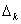
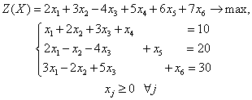
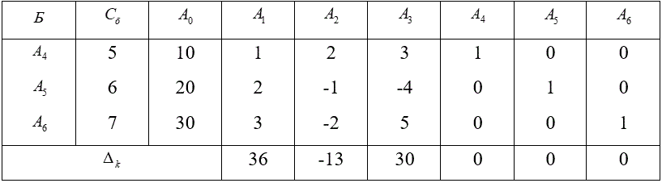
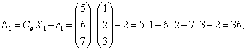
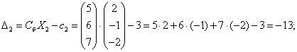
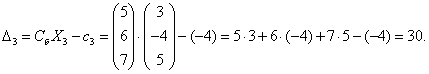

ПРИМЕР:
Вычислить оценки  разложений векторов условий по базису опорного решения для следующей задачи:

Задача имеет начальное опорное решение с базисом. Для удобства расчета запишем исходные данные в таблицу, называемую симплексной (таблица 2).
Таблица 2. – Симплексная таблица

Оценки рассчитывают по формулам:



Оценки для векторов, входящих в базис, всегда равны нулю.